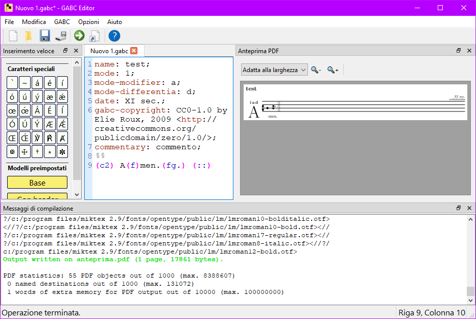

GABC Editor è un editor di testo a interfaccia grafica specializzato per i file GABC, usati dalla libreria Gregorio
di LaTeX per la creazione di partiture di canto gregoriano. I file GABC si possono salvare e caricare come normali
file di testo (con estensione .gabc).
Questo software permette anche (previa installazione di una distribuzione LaTeX e della libreria Gregorio) di compilare i file GABC includendoli in un template LaTeX predefinito e di mostrare un PDF compilato nell'apposito riquadro di anteprima.
Si può inoltre esportare il risultato come documento PDF, come immagine (JPG o PNG) o come file TeX.
Per poter utilizzare al meglio questo editor è necessario avere installato la suite di programmi LaTeX e la libreria Gregorio.

Alcune funzioni si trovano anche nella barra degli strumenti; esistono anche alcune scorciatoie da tastiera.
Ctrl + N): crea un nuovo file GABC (si aprirà in una nuova scheda
nell'editor).Ctrl + O): apri un file GABC esistente (si aprirà in una nuova scheda
nell'editor).Ctrl + S): salva il file GABC corrente (se è un nuovo file, verrà chiesto di
scegliere la cartella e il nome del file).Ctrl + Shift + S): salva il file corrente come nuovo file (verrà
sempre chiesto di scegliere la cartella e il nome del file)..pdf, .tex, .png
o .jpg. Questa funzione è disabilitata se non viene rilevata un'installazione
LaTeX.Ctrl + Z): annulla l'ultima modifica al file GABC corrente.Ctrl + Y): ripristina l'ultima modifica annullata nel file GABC
corrente.Ctrl + A): seleziona tutto il contenuto del file GABC corrente.
Ctrl + Shift + S): taglia il testo selezionato dal file corrente.Ctrl + Invio): Compila il file GABC corrente e mostra l'anteprima dello
spartito in formato PDF. La compilazione può impiegare alcuni secondi. Questa funzione è
disabilitata se non viene rilevata un'installazione LaTeX.
Qui puoi accedere rapidamente alle funzioni più comuni. Passando col mouse sopra un pulsante viene mostrato il nome dell'azione.
Se si clicca col tasto destro sulla barra dei menu o su quella degli strumenti, si possono nascondere o mostrare la barra degli strumenti e le varie aree della finestra principale.
La finestra è divisa in due sezioni. La prima, Caratteri speciali, contiene una mappa di simboli, soprattutto
quelli difficilmente ottenibili con la tastiera italiana (come l'apice, la tilde e molte lettere accentate), ma ma
anche alcuni caratteri comunemente usati negli spartiti gregoriani e nella liturgia.
Cliccando su un pulsante, il codice per disegnare quel simbolo (che può consistere di più caratteri) viene inserito
nel testo del file GABC alla posizione corrente del cursore.
Nella sezione successiva, Modelli preimpostati, ci sono due pulsanti che funzionano allo stesso modo dei
precedenti, ma inseriscono due semplici modelli GABC prefabbricati da cui partire per scrivere lo spartito. Uno
("Base") include solo il campo name nell'intestazione (l'unico obbligatorio) e aggiunge una chiave e
una sillaba iniziale; l'altro ("Con header") aggiunge alcuni campi significativi all'intestazione (tra cui
l'indicazione di modo e alcune annotazioni di esempio).
L'editor è organizzato in schede; il nome del file aperto in una scheda è indicato nel nome della scheda stessa. Le schede si possono spostare trascinandole col mouse, oppure chiudere col pulsante di chiusura. Se si chiude un file con delle modifiche, verrà chiesta una conferma per il salvataggio. Creando un nuovo file o aprendone uno già esistente, questo verrà aperto in una nuova scheda. All'apertura del programma si crea automaticamente una scheda nuova con un file vuoto.
L'editor è un normale programma per la modifica di file di testo (simile al Blocco Note di Windows). Si può selezionare, copiare, tagliare e incollare il testo (anche da e verso programmi esterni), oltre ad annullare e ripristinare le modifiche al testo.
La sintassi GABC è colorata per aiutare l'occhio. Sono colorati i nomi dei campi nell'intestazione, i commenti, le
parentesi tonde, le note (tutto il contenuto fra parentesi tonde), i tag di apertura e chiusura (racchiusi fra segni
< e >) e i caratteri di escape ($ e il carattere a cui si riferisce).
La visualizzazione del PDF è a pagina multipla: scorrendo in basso (con la barra di scorrimento o con la rotellina del mouse) si vedono le eventuali pagine successive. In alto si trovano i controlli per l'ingrandimento.
Dietro le quinte, il comando Compila crea un semplice file
.tex che include il codice GABC, poi usa il programma lualatex per
compilarlo e generare un PDF, e infine mostra il PDF nel riquadro di anteprima.
Durante la compilazione, nel riquadro Messaggi di compilazione compaiono in tempo reale i messaggi di
output di lualatex. La finestra si può scorrere con la barra di scorrimento o con la rotellina del
mouse.
Nei messaggi sono evidenziate con colori diversi alcune
parole chiave ("error" in rosso, "warning" in giallo, "info" in blu, "output written in..." in
verde) per aiutare a identificare eventuali problemi.
Si trova nella parte più bassa della finestra. Nella parte sinistra mostra alcuni messaggi sullo stato corrente di compilazione; sulla destra mostra la posizione del cursore nel file di testo aperto in quel momento.
Il cuore di GABC Editor è l'editor di testo. In effetti per scrivere un file GABC si potrebbe anche utilizzare il Blocco Note o un editor di testo qualsiasi. Tuttavia GABC Editor offre alcune funzionalità aggiuntive (in particolare l'evidenziatore di sintassi e una finestra di inserimento veloce) che semplificano la scrittura e la successiva compilazione.
lualatex,
in cui alcune parole chiave vengono colorate per mostrare a colpo d'occhio se ci sono stati errori. La
compilazione dura qualche secondo; al termine il risultato compare nel riquadro di anteprima. In quest'ultimo si
può ingrandire, rimpicciolire e scorrere il documento.
Per iniziare rapidamente, sono disponibili nella finestra di inserimento veloce due semplici modelli GABC prefabbricati da cui partire (come detto sopra).